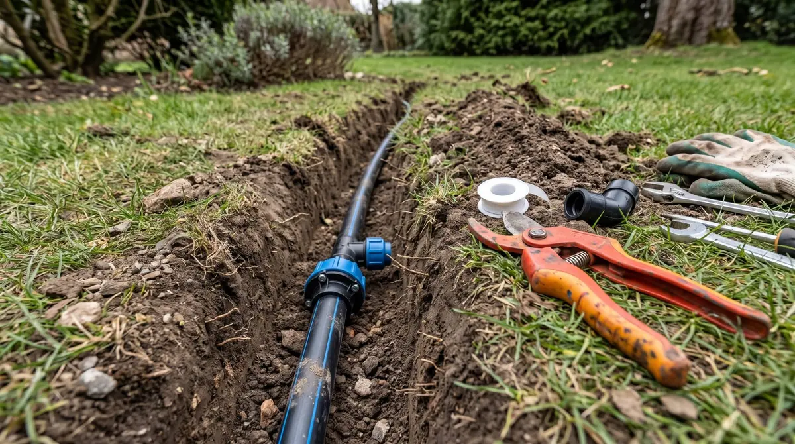

Riego automático en Zaragoza
Instalamos riego automático en jardines nuevos o ya hechos, y reparamos el que tiene: fugas, aspersores rotos, electroválvulas que no abren o programadores que fallan.



Instalación
- Aspersores y difusores para el césped.
- Goteo para setos, arbustos, árboles y huerto.
- Electroválvulas en arqueta y programador, para que cada zona reciba el agua que necesita.
- En jardines ya hechos abrimos zanjas estrechas, metemos la tubería y volvemos a tapar.
Reparación y puesta a punto
Buscamos y arreglamos fugas, cambiamos aspersores, goteros y electroválvulas, y dejamos el programador ajustado. En primavera ponemos el riego en marcha y lo revisamos zona por zona; antes del invierno lo dejamos preparado para las heladas.
Regar bien con menos agua
En Zaragoza el verano es seco y el cierzo se lleva buena parte del agua de los aspersores. Programamos el riego de noche o de madrugada, ponemos goteo donde se puede y ajustamos los tiempos según la época del año.
Preguntas frecuentes
¿Se puede poner riego automático en un jardín ya hecho?
Sí. Abrimos zanjas estrechas, metemos la tubería y volvemos a tapar. El césped se recupera en unas semanas.
¿A qué hora conviene regar?
De noche o de madrugada. Se evapora menos agua y suele haber menos viento, que con los aspersores se nota mucho.
¿Qué hay que hacer con el riego en invierno?
Con las heladas conviene cerrar el agua y vaciar la instalación, o al menos proteger las electroválvulas y el programador. Lo dejamos preparado en otoño y lo ponemos en marcha en primavera.
¿Arreglan un riego que ha instalado otra empresa?
Sí. Reparamos fugas, aspersores y electroválvulas aunque la instalación no sea nuestra.
Otros servicios
Pídanos presupuesto
Cuéntenos qué necesita y dónde, y le preparamos un presupuesto sin compromiso. Si nos manda una foto, mejor.
Calle Riglos 9, 50012 Zaragoza (España)